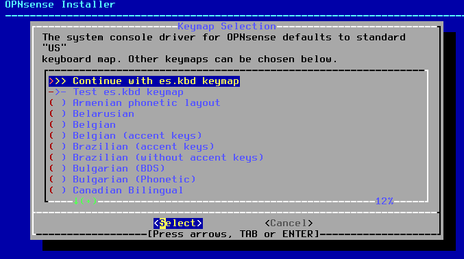
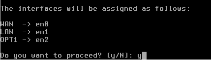
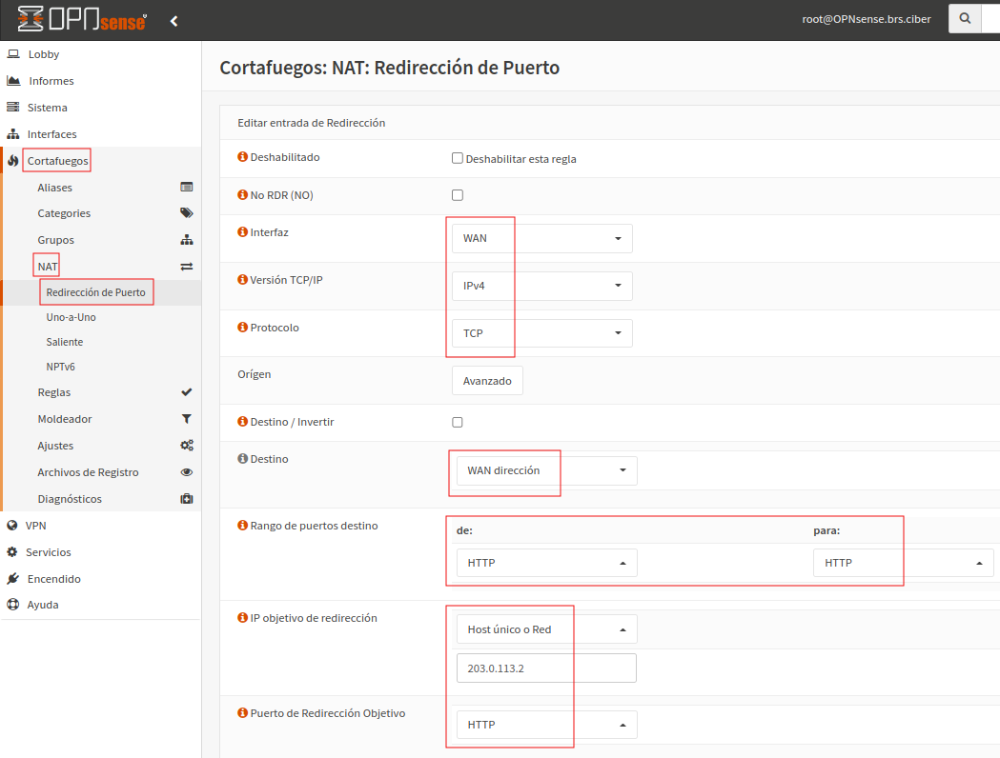
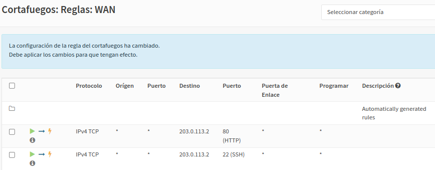

Práctica 3. Instalación y configuración de un NGFW perimetral
1. Objetivos
Aprender a instalar y configurar un cortafuegos perimetral de próxima generación (NGFW) en un escenario de red propuesto.
2. Preparación
Para este capítulo, se necesitan los siguientes recursos:
- Un PC (anfitrión) con al menos 4 GB de RAM libre para arrancar 3 máquinas virtuales con VirtualBox: cortafuegos, equipo cliente y servidor en DMZ.
- Para este caso se utiliza un equipo con Linux Mint 19.
- ISO de OPNsense, un cortafuegos libre basado en FreeBSD. En la página oficial de descarga, seleccionar arquitectura amd64, tipo de imagen dvd y un mirror de Europa.
- Dos máquinas virtuales que simularán un cliente de la red local de la organización, y un servidor web en la DMZ. Para el cliente y el servidor se puede usar el Sistema Operativo que se prefiera, pero preferiblemente que no necesite excesiva RAM para funcionar y simular todo en un único PC, como por ejemplo una Live de Fedora con escritorio LXDE.
En el PC anfitrión, hay que establecer al equipo una ip en la red vboxnet0. Para este caso, se le asigna la 192.168.56.1/24.
ndo es:
jc@jc-Latitude-E6430:~$ sudo ip addr add 192.168.56.1/24 dev vboxnet0

Si se realiza un ip a, se observa que la interfaz está DOWN.
jc@jc-Latitude-E6430:~$ ip a
Para subir la interfaz hacemos:
jc@jc-Latitude-E6430:~$ sudo ifconfig vboxnet0

jc@jc-Latitude-E6430:~$ ip a
3. Procedimiento inicial guiado
1. Escenario de simulación
En este capítulo se simula el siguiente escenario de red de una organización con un cortafuegos con tres zonas: interna (LAN), externa (WAN) y DMZ. Esta configuración es habitual en pequeñas organizaciones aunque hay configuraciones más robustas donde existen varias capas de cortafuegos entre las diferentes zonas:
Tanto el cortafuegos OPNSense, como el cliente en la LAN y el servidor en la DMZ, deben simularse con VirtualBox. La red LAN de la organización corresponde con la red sólo-anfitrión de VirtualBox, la red DMZ corresponde con una red interna a la que llamaremos DMZ y la red WAN, corresponde con la LAN del centro u hogar (donde se esté realizando este supuesto práctico).
Los pasos a seguir son los siguiente
2. Instalación de OPNSense
Una vez descargada y descomprimida la imagen de OPNSense, hay que crear una máquina en VirtualBox con las siguientes características:
- Nombre: OPNSense (puede ser cualquier otro).
- Tipo: BSD.
- Versión: FreeBSD (64 bit).
- Memoria: 1024 MB (suficiente para OPNSense).
- Disco duro: por defecto todo (Crear disco, tipo VDI, dinámicamente, 16 GB).
Una vez creada la máquina, desde la configuración de la VM, hay que editar el apartado de red para crear tres adaptadores:
- Adaptador 1: puente con la tarjeta con conexión a Internet del anfitrión. Será la WAN.
- Adaptador 2: sólo-anfitrión (vboxnet0), será la LAN del escenario.
- Adaptador 3: Red interna con nombre DMZ.
En las propiedades del CD, hay que cargar el fichero ISO con el instalador de OPNSense. A continuación, se inicia la la máquina y aparece el asistente de instalación en modo texto:
Si no se pulsa nada, inmediatamente arranca la instalación de OPNSense y el asistente solicita las credenciales para seguir. Hay que introducir las siguientes:
- login: installer
- password: opnsense
En la siguiente ventana elegimos el idioma del teclado con el cursos del teclado hasta elegir el Spanish pulsando Enter:
Después seleccionamos Continue with es.kbd keymap y pulsamos Enter:

Elegimos Install UFS:
El asistente advierte que sólo se tiene 1GByte de RAM. Para continuar, hay que seleccionar 'Proceed anyway'.
Seleccionamos el disco virtual de Vbox (para este caso el ada0 de 16GBytes) y pulsamos Enter (OK) y seleccionamos YES cuando nos pregunte si deseamos destruir los datos del disco:
Y comienza a realizar la instalación en el disco duro virtual de la máquina:
Cuando finalice la instalación, nos da la opción de cambiar la contraseña de root o de salir del instalador. La contraseña de root por defecto es opnsense, por lo que podemos cambiarla ahora o más adelante desde la shell con el comando passwd. Para este caso, se cambia el password en este momento del asistente (change root password).
A continuación, seleccionamos 'Exit and reboot' (hay que quitar la ISO del CD/DVD virtual).
El asistente nos informa que una vez se reinicie, se podrá acceder mediante la url https://192.168.1.1
3. Configuración inicial de OPNSense
Tras reiniciar la máquina e introducir las credenciales de root con el password que hemos cambiado anteriormente, nos aparece el menú principal de consola:

El primer paso es reasignar las tres interfaces del firewall para que coincidan con el escenario. La primera interfaz (em0), es la WAN porque está puenteada con la tarjeta del PC anfitrión. La segunda (em1) es la LAN, que está en modo sólo-anfitrión y a la que se conectará el cliente de la red local interna de la organización. La tercera (em2) es la DMZ de la organización, que está conectada a una red interna con nombre DMZ.
Por tanto, pulsamos 1 y vamos asignando las interfaces. A la primera y segunda pregunta, indicamos que no vamos a configurar ni LAGGS ni VLANs:
Nos pregunta por la interfaz WAN. Escribimos em0 que es la primera:
Después nos pregunta por la interfaz LAN y por la interfaz opcional 1, a lo que respondemos em1 y em2 respectivamente. Desde la GUI posteriormente cambiaremos el nombre de OPT1 a DMZ:
Para la interfaz opcional 2, pulsamos enter (dejarla vacía).

Finalmente indicamos que queremos proceder y se guardará la configuración:

A continuación, hay que seleccionar la opción 2 en el menú, para asignar las direcciones IP.
En la WAN ya aparece por DHCP así es que la dejamos (aunque en entornos de producción, lo normal es que todas las interfaces del cortafuegos sean estáticas).
Seleccionamos la LAN (opción 1) y le asignamos una IP estática del rango de la interfaz vboxnet0 que siempre es 192.168.56.0/24 (a no ser que se cambie). Elegimos la 192.168.56.100/24, asegurándonos también de haber deshabilitado el DHCP de VirtualBox pues posteriormente usaremos el cortafuegos como servidor DHCP:
Después contestamos que no vamos a configurar gateway (lo coge de la WAN por dhcp) y que tampoco va a tener IPv6 en la LAN. El servicio DHCP en la LAN se puede configurar desde la GUI posteriormente. Después indicamos que no queremos revertir a HTTP (dejamos HTTPS por seguridad) en la GUI.
A continuación, nos pregunta si se quiere cambiar el acceso por protocolo https a http, si se quiere generar un nuevo certificado autofirmado y por último, si se quiere restablecer el acceso web por defecto. Contestamos N, N y por último y.
Cuando acaba de configurar la interfaz, nos indica que la url para el acceso web es https://192.168.56.100
Procedemos igual con la interfaz OPT1 (DMZ) asignándole la 203.0.113.1/24, sin gateway y sin dirección IPv6. Esta interfaz también puede configurarse después desde la GUI, no es necesario hacerlo ahora. Realmente la única importante es la LAN, para poder acceder desde un navegador a la IP 192.168.56.100 y realizar el resto de configuración.
Una vez se finaliza la configuración, quedaría así:
A continuación accedemos desde un navegador en el anfitrión, a la IP de la LAN del cortafuegos (https://192.168.56.100), que hará las veces de interfaz de gestión en este caso (aunque en entornos de producción es habitual que estos dispositivos tengan una interfaz dedicada para administración fuera de banda):
Si la interfaz vboxnet0 en el anfitrión no tiene ip asignada y no esta up, hay que configurarla, para este caso se realiza lo siguiente:
jc@jc-Latitude-E6430:~$ sudo ip addr add 192.168.56.1/24 dev vboxnet0
jc@jc-Latitude-E6430:~$ sudo ifconfig vboxnet0 up
Una vez identificados con las credenciales de root, se nos abrirá el asistente. Podemos cancelarlo o dejar que nos guíe en la configuración inicial. En este caso lo utilizaremos pero es prescindible:
El resto de opciones pulsamos Next, de ese modo, confirmamos la dirección WAN y LAN que hemos configurado desde la consola y finalmente pulsamos Recargar.
A continuación, ya de nuevo en la GUI, seleccionamos “Interfaces” desde el menú de la izquierda para cambiar el nombre de OPT1 a DMZ:
Pulsamos Guardar y Aplicar cambios.
 

3. Configuración de reglas de NAT saliente
A continuación vamos a configurar el NAT saliente. Por defecto, el sistema crea varias reglas pero las vamos a crear desde cero manualmente para aprender como realizar el NAT. Las reglas automáticas creadas son las siguientes:
Para configurar la creación de reglas manuales, hay que seleccionar 'Generación manual de regla NAT saliente (no se generan reglas automáticas)' y pulsar Guardar.
Le damos a Guardar y Aplicar cambios. En ese momento, habrá eliminado las reglas automáticas.
A continuación creamos dos reglas de NAT, para traducir las direcciones de la LAN y la DMZ respectivamente, cuando se salga a Internet. Observar que en la DMZ se tiene direccionamiento IP público, que suele ser lo habitual en DMZ. En un entorno real no sería necesario hacer NAT para DMZ pero en nuestro caso sí porque es un direccionamiento de pruebas (red de TEST-NET-3) y que nuestro ISP no reconoce. Pulsamos Añadir y configuramos los datos siguientes:
Para finalizar, hay que pulsar en Guardar y Aplicar cambios.
Agregamos una nueva para hacer NAT en la DMZ y que nuestro servidor virtual en la DMZ pueda salir a Internet (recordar que con direccionamiento público real no haría falta):
Para finalizar, hay que pulsar en Guardar y Aplicar cambios.
Finalmente nuestras dos reglas de NAT saliente creadas son las siguientes donde se les ha insertado un comentario para describir las mismas:
A continuación vamos a terminar de configurar el servicio DHCP (si no se ha hecho con el asistente) e indicar algunos parámetros que faltan:
Para finalizar, hay que pulsar en Guardar.
4. Comprobar acceso a Internet
Es el momento de comprobar que tanto el cliente en la LAN como el servidor en la DMZ, pueden salir a Internet a través del firewall haciendo NAT con la IP de la WAN. Para ello hay que crear/utilizar dos máquinas con las siguientes características (se recomienda un Fedora Live con escritorio LXDE, aunque puede ser cualquier otro). Para el cliente en la LAN:
- Nombre: Fedora Client
- Tipo: Linux
- Versión: Fedora (64 bit)
- Memoria: 1536 MB
- Disco duro: por defecto todo (Crear disco, tipo VDI, dinámicamente).
Una vez creada la máquina, desde la configuración de la VM, editamos la red y configuramos el adaptador 1 en la red sólo-anfitrión. Al arrancar Fedora cliente, cogerá una IP de la LAN a través del servidor DHCP que hemos habilitado en OPNSense.
Antes de comprobar nada, hay que asegurarse de que el servidor dhcp de VirtualBox esté deshabilitado. Para comprobarlo, hacemos:
jc@jc-Latitude-E6430:~$ vboxmanage list dhcpservers
Como se puede observar en la imagen superior, se tiene habilitado un servidor dhcp en la subred 192.168.11.0/24, por lo que si ponemos en marcha el equipo Fedora, recibirá una ip en esa dirección de red (ver imagen inferior)
Para deshabilitar el servidor dhcp en VirtualBox, el comando es el siguiente:
VBoxManage dhcpserver remove --netname <network_name>
Para este caso, el netname es HostInterfaceNetworking-vboxnet0 (obtenido con el comando vboxmanage list dhcpservers).
jc@jc-Latitude-E6430:~$ vboxmanage dhcpserver remove --netname "HostInterfaceNetworking-vboxnet0"
Ahora, si se reinicia la red del equipo Fedora, obtiene una ip del servidor DHCP de la red LAN del firewall.
Por lo que el equipo Fedora cliente estará navegando perfectamente como puede verse en la siguiente captura.
Comprobamos lo mismo con el servidor en la DMZ, una máquina virtual Ubuntu Server (aunque puede ser cualquier otro en función de la RAM disponible en el anfitrión) con las siguientes características:
- Nombre: Ubuntu-Server-20.04
- Tipo: Linux.
- Versión: 20.04 (64 bit).
- Memoria: 1024 MB.
- Disco duro: por defecto todo (Crear disco, tipo VDI, dinámicamente)
Una vez creada la máquina, desde la configuración de la VM, editamos la red y configuramos el adaptador 1 en la red interna DMZ. Al arrancar Ubuntu Server, es necesario configurarle una IP estática que es lo habitual en servidores, con los siguientes parámetros:
- IP: 203.0.113.2/24.
- Gateway: 203.0.113.1 (el cortafuegos).
- DNS: los dns de tu conexión a Internet o cualquier DNS público fiable como Google o Cloudflare (8.8.8.8, 8.8.4.4, 1.1.1.1).
Si probamos a navegar o hacer una traza a un destino de Internet (comando mtr o traceroute) veremos que no funciona nada, ni el ping.
admnistrador@orion:~$ mtr 8.8.8.8
Esto es debido a que por defecto, un firewall tiene una política restrictiva y para las redes no confiables como una WAN o una DMZ, tiene todo el tráfico cortado. Se puede comprobar que para la LAN, ha creado una serie de reglas automáticas que permiten que funcione el DHCP y que los clientes de la LAN puedan salir a Internet tanto para IPv4 como para IPv6:
Esto permite incluso que el equipo Fedora cliente pueda hacer ping al Ubuntu Server en la DMZ, y permitir que el ping reply vuelva porque es un cortafuegos de estado. Sin embargo, el Ubuntu Server en la DMZ no puede hacer ping al equipo Fedora cliente en la LAN.
Si se hace un ping del cliente Fedora al servidor Ubuntu contesta.
Lo contrario (ping del ubuntu server a Fedora), no funciona como era de esperar.
5. Configuración de reglas en el cortafuegos
En este apartado, se van a crear reglas para la red DMZ. Por seguridad, no se recomienda que desde la DMZ se pueda originar tráfico hacia equipos de la red interna. Esto es así porque un servidor de la DMZ puede haber sido atacado y comprometido desde Internet ya que ofrece servicios a Internet como http, dns, ftp, e-mail, etcétera que pueden ser vulnerables y ser una vía de entrada para un atacante que pivotando a través del servidor comprometido, podría entrar en la LAN interna de la organización. Por tanto vamos a permitir sólo que desde la DMZ hacia Internet se permita todo el tráfico (de momento sólo IPv4 en este capítulo) pero podría limitarse a determinados servicios también.
El procedimiento es el siguiente:
Desde Cortafuegos, hay que acceder a Reglas y luego DMZ, para pulsar Añadir:
La configuración de la nueva regla es la siguiente añadiéndole la siguiente descripción: 'Permitir desde la DMZ a cualquier destino que NO SEA la LAN interna'.
Si se observa, se ha aplicado una regla de permitir desde la DMZ a cualquier destino que NO SEA la LAN interna (Destino/invertir).
Pulsamos Guardar y Aplicar cambios, y ya se tendrá la nueva regla creada.
A continuación se comprueba como el servidor Ubuntu en la DMZ puede navegar y hacer trazas pero sigue sin poder hacer ping a la LAN interna.
admnistrador@orion:~$ mtr 8.8.8.8
Si se hace ping al equipo Fedora, no contesta como era de esperar.
admnistrador@orion:~$ ping 192.168.56.10
4. Trabajo a realizar
Llegados a este punto y con los ejemplos realizados anteriormente como muestra, se te pide que intentes implementar las siguientes dos directivas de política de seguridad mediante reglas en el cortafuegos.
- Directiva 1. Desde la red interna a la DMZ se permite el icmp, ftp, http, https y ssh. No debe permitirse ningún servicio más.
- Directiva 2. Desde Internet al servidor de la DMZ debe permitirse como tráfico entrante el ftp, http, https en sus puertos por defecto y el ssh por el puerto público 20022 (en vez del 22 por defecto).
Para poner en práctica estas reglas, puedes levantar un servidor Apache, el servicio ssh (sudo systemctl start sshd) y FTP (por ejemplo vsftpd) en el Ubuntu Server de la DMZ. Para probar la directiva 1, puedes hacerlo desde el Fedora cliente hacia el Ubuntu Server en la DMZ.
Hay que poner en marcha el servicio.
Hay que tener en cuenta que las reglas que se han creado en la red LAN para permitir la navegación web, hacen que también se pueda acceder al servidor en la DMZ ya sea mediante un ping, por ssh, etcétera, por lo que deberás proponer una solución para mantener esas reglas o cambiarlas para que se adapte a lo que se demanda en esta directiva.
El resultado es que desde el equipo cliente Fedora en la LAN puedes
Acceso al servidor de la DMZ por ssh
Acceso al servidor http en la DMZ
Acceso al servidor ftp en la DMZ
Para probar la directiva 2, puedes hacerlo desde el propio anfitrión o cualquier otro equipo conectado a la red de tu casa/centro (donde estés haciendo la práctica, que a efectos es como si fuera Internet en el escenario) y comprueba si puedes conectarte al servidor web del Fedora en la DMZ por esos servicios, indicando la dirección IP en la WAN que tiene el cortafuegos, puesto que el servidor de la DMZ está enmascarado tras el cortafuegos para l2. A efectos de la práctica, el direccionamiento privado de tu casa/centro es Internet, pero por defecto OPNSense deniega que desde la WAN se permita tráfico con origen direcciones privadas de la RFC 1918, así es que debes desactivar esta característica desde Interfícies → WAN → Bloquear redes privadas (desmarcar):os usuarios de Internet.
Consideraciones a tener en cuenta:
1. Si en el servidor hay algún firewall por defecto activado es conveniente a efectos de la práctica, deshabilitarlo. Ejemplos:
- En Fedora Server: sudo systemctl stop firewalld.
- En Ubuntu Server: sudo ufw disable.
2. A efectos de la práctica, el direccionamiento privado de la red del aula/casa es Internet, pero por defecto OPNSense deniega que desde la WAN se permita tráfico con origen direcciones privadas de la RFC 1918, así es que debes desactivar esta característica desde Interfícies → WAN → Bloquear redes privadas (desmarcar):
3. Para implementar la directiva 1, se recomienda modificar la regla de IPv4 que crea OPNSense para permitir a la red LAN acceder a todo el tráfico. Esta regla puedes partirla en dos (con la opción de clonar una regla): una afecta al destino DMZ y otra a lo que no sea DMZ (Invertir destino). También puedes crear un alias de puertos para meterlos en una sólo regla, desde Cortafuegos → Aliases):
Las dos reglas que se crearían, después de crear el alias de puertos, tendrían este aspecto:
4. Para implementar la directiva 2, es necesario crear reglas de NAT de redirección de puerto, indicando que la IP de destino de la petición es la IP WAN del cortafuegos y se debe redirigir a la IP del servidor en la DMZ (203.0.113.2) y al puerto correspondiente que podría ser otro:

Para que las reglas de redirección de puertos funcionen como es de esperar, es necesario hacer un cambio en los ajustes avanzados del firewall, como se indica en la captura:
La razón de este ajuste, es que en las últimas versiones de OPNSense, cualquier petición que venga de un cliente cuya IP se encuentre en el segmento WAN, el firewall OPNSense envía las respuestas a la MAC del router y no a la del cliente, provocando que la conexión no funcione. Este ajuste lo incluyeron para los entornos multiwan, donde hay varios routers de salida a Internet para balanceo de carga y alta disponibilidad en la salida a Internet. De esta manera se evita el problema del enrutamiento asimétrico, aunque en el escenario que nos ocupa, provoca que la conexión no funcione.En este punto, cuando al cortafuegos le llegue una petición desde Internet a su IP WAN por el servicio indicado (protocolo y puerto), redirigirá la petición al servidor de la DMZ indicado, al puerto indicado, que puede ser el mismo u otro.
Por tanto para implementar la política del puerto ssh 20022, hay que redirigir este puerto público al 22 del servidor de la DMZ. Cambiar el puerto público de un servicio a uno no estándar puede ayudar a proteger el servicio, si bien es una medida de seguridad débil por ofuscación, ya que en el momento que un atacante haga un barrido de puertos completo, lo puede descubrir.
Cada vez que se crea una redirección de puerto, OPNSense crea automáticamente una regla de entrada en la interfaz WAN. Por ejemplo, se han creado dos redirecciones de puertos de HTTP y 20022 hacia el HTTP y el SSH del servidor de la DMZ y se han creado automáticamente estas dos reglas:

Una vez llegado a este punto, comprueba que las dos directivas de seguridad definidas anteriormente funcionan correctamente y para ello, realiza una batería de pruebas.
6. Configuración del servicio proxy FTP
Si queremos que algunos clientes de la LAN (windows 10, antiguas versiones de Fedora, etcétera) puedan acceder a servicios FTP externos, es necesario instalar y configurar el servicio proxy FTP en OPNSense. Esto es así porque al realizar el NAT en los paquetes IP, las conexiones dinámicas que crea el FTP en otros puertos (modo normal y modo pasivo) pasa información de la dirección IP del cliente para que el servidor se conecte a él e iniciar la transferencia de un fichero. Es necesario que un servicio traduzca correctamente las direcciones IP privadas de los clientes en la pública para que pueda funcionar bien el servicio. En el caso de usar el modo pasivo, donde el cliente se conecta al servidor, no sería necesario pero hay algunos clientes FTP que no implementan el modo pasivo (como el cliente FTP de consola de Windows). Los navegadores web generalmente conectan siempre con el modo pasivo de FTP.
Para comprobar que, efectivamente, no funcionan bien las transferencias FTP desde un cliente de la LAN, se prueba a conectar desde un cliente Windows 10 a un servicio de FTP anónimo como el del UV. Se introduce como usuario anonymous y cualquier valor como contraseña. Después se intenta hacer un dir para mostrar los contenidos y como se puede observar el servidor corta la conexión al no poder conectarse al cliente para transferir el listado de directorios (que se hace por otro puerto dinámico negociado entre cliente y servidor):

Si se cambia a modo pasivo con el comando passive, sí que funciona pues en este caso el cliente se conecta a un puerto de la ip pública del servidor con una conexión saliente y no entrante como en el caso anterior.
Para el caso del cliente Fedora Release 36, se realiza la misma conexión al servicio de FTP de la UV y como se puede observar en la figura inferior, se pueden listar directorios ya que esta versión cambia a modo pasivo por defecto.
Figura 1. Versión de Fedora.
Figura 2. Acceso a ftp.uv.es en modo pasivo.
Para solucionar esta problemática asociada al modo normal del protocolo FTP, es necesario instalar el servicio proxy FTP y redirigir el puerto 21 saliente hacia este proxy. Para ello el primer paso es instalar el plugin de proxy ftp accediendo a: Sistema --> Firmware --> Complementos y seleccionamos la pestaña Complementos para insertar en la caja de texto (buscador) ftp-proxy.
Una vez lo encuentra, hay que pulsar el icono de instalar (+) y realizará su instalación.
Una vez se instala, hay que actualizar el navegador para que aparezca la entrada de FTP Proxy en Servicios.
A continuación, se accede a Servicios --> Proxy FTP para su configuración, para ello, hay que pulsar el signo + y configurar el proxy FTP como se indica:
Pulsamos Guardar para consolidar los cambios.
El siguiente paso es redirigir el puerto 21 hacia este servicio, desde reglas de NAT, creando una nueva:
- Interfaz: LAN
- Destino: cualquiera.
- Rango de puertos destino: de: FTP para: FTP.
- IP objetivo de redirección (Host único o red): 127.0.0.1.
- Puerto de Redirección Objetivo: (otro) 8021.
Pulsamos Guardar.
En la captura anterior se puede ver la regla ya creada. Pulsamos Aplicar cambios.
Una vez aplicados los cambios, ya nos funcionará correctamente el servicio FTP en modo puerto. Se comprueba con el cliente Windows 10 y se puede observar que se accede en modo pasivo y se pueden listar los directorios remotos por ejemplo.
Obra publicada con Licencia Creative Commons Reconocimiento No comercial Compartir igual 4.0